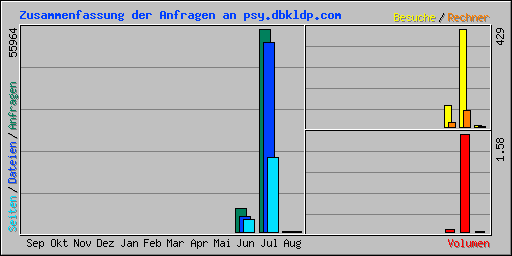

| Zusammenfassung nach Monaten | ||||||||||
|---|---|---|---|---|---|---|---|---|---|---|
| Monat | Tagesdurchschnitt | Monats-Summe | ||||||||
| Anfragen | Dateien | Seiten | Besuche | Rechner | Volumen | Besuche | Seiten | Dateien | Anfragen | |
| Aug 2017 | 157 | 152 | 45 | 5 | 2 | 3.98 MB | 5 | 45 | 152 | 157 |
| Jul 2017 | 1805 | 1686 | 658 | 13 | 73 | 1.58 GB | 429 | 20409 | 52292 | 55964 |
| Jun 2017 | 322 | 211 | 174 | 4 | 18 | 44.79 MB | 92 | 3489 | 4232 | 6443 |
| Summen | 1.63 GB | 526 | 23943 | 56676 | 62564 | |||||
| Generated by Webalizer Xtended (RB30) by Patrick Frei based on Webalizer Version 2.23-08 |